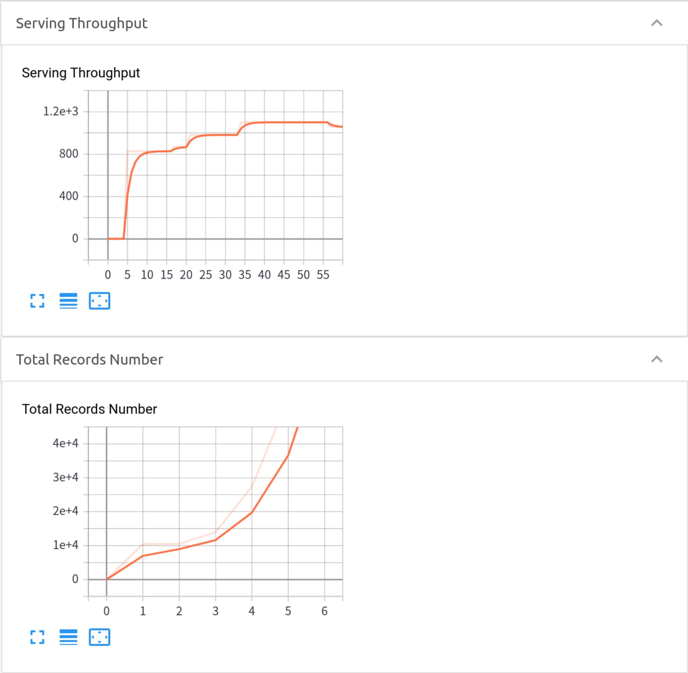

Cluster Serving
Programming Guide
Analytics Zoo Cluster Serving is a lightweight distributed, real-time serving solution that supports a wide range of deep learning models (such as TensorFlow, PyTorch, Caffe, BigDL and OpenVINO models). It provides a simple pub/sub API, so that the users can easily send their inference requests to the input queue (using a simple Python API); Cluster Serving will then automatically manage the scale-out and real-time model inference across a large cluster (using distributed streaming frameworks such as Apache Spark Streaming, Apache Flink, etc.)
(Note currently only image classification models are supported).
This page contains the guide for you to run Analytics Zoo Cluster Serving, including following:
Quick Start
This section provides a quick start example for you to run Analytics Zoo Cluster Serving. To simplify the examples, we use docker to run Cluster Serving in these examples. If you do not have docker installed, install docker first.
Use one command to run Cluster Serving container.
docker run -itd --name cluster-serving --net=host analytics-zoo/cluster-serving:0.7.0-spark_2.4.3
Log into the container using docker exec -it cluster-serving bash.
We already prepared analytics-zoo and opencv-python with pip in this container. And prepared model in model directory with following structure.
cluster-serving |
-- | model
-- frozen_graph.pb
-- graph_meta.json
Start Cluster Serving using cluster-serving-start. Then, run python program python quick_start.py to push data into queue and get inference result.
Then you can see the inference output in console.
image: fish1.jpeg, classification-result: class: 1's prob: 0.9974158
image: cat1.jpeg, classification-result: class: 287's prob: 0.52377725
image: dog1.jpeg, classification-result: class: 207's prob: 0.9226527
Wow! You made it!
Note that the Cluster Serving quick start example will run on your local node only. Check the Deploy Your Own Cluster Serving section for how to configure and run Cluster Serving in a distributed fashion.
For more details, you could also see the log and performance by go to localhost:6006 in your browser and refer to Log and Visualization, or view the source code of quick_start.py here, or refer to API Guide.
Deploy your Own Cluster Serving
1. Installation
It is recommended to install Cluster Serving by pulling the pre-built Docker image to your local node, which have packaged all the required dependencies. Alternatively, you may also manually install Cluster Serving (through either pip or direct downloading) as well as Redis and TensorBoard (for visualizing the serving status) on the local node.
Docker
docker pull zoo-cluster-serving
then, (or directly run docker run, it will pull the image if it does not exist)
docker run zoo-cluster-serving
Go inside the container and finish following operations.
Manual installation
For Not Docker user, first, install Redis and TensorBoard (for visualizing the serving status) and add $REDIS_HOME variable to your environment if you want Cluster Serving to help you start and stop it.
Install Analytics Zoo by download release or pip.
Download Release
Download Analytics Zoo from release page on the local node, go to analytics-zoo/scripts/cluster-serving, run cluster-serving-init.
Pip
pip install analytics-zoo. And go to any directory, run cluster-serving-init.
2. Configuration
2.1 How to Config
After installation, you will see a config file config.yaml your current working directory. Your Cluster Serving configuration can all be set by modifying it. See an example of config.yaml below
## Analytics Zoo Cluster Serving Config Example
model:
# model path must be set
path: /opt/work/model
data:
# default, localhost:6379
src:
# default, 3,224,224
image_shape:
params:
# default, 4
batch_size:
# default, 1
top_n:
spark:
# default, local[*], change this to spark://, yarn, k8s:// etc if you want to run on cluster
master: local[*]
# default, 4g
driver_memory:
# default, 1g
executor_memory:
# default, 1
num_executors:
# default, 4
executor_cores:
# default, 4
total_executor_cores:
2.2 Preparing Model
Currently Analytics Zoo Cluster Serving supports Tensorflow, Caffe, Pytorch, BigDL, OpenVINO models. (Note currently only image classification models are supported).
You need to put your model file into a directory and the directory could have layout like following according to model type, note that only one model is allowed in your directory.
Tensorflow
|-- model
|-- frozen_graph.pb
|-- graph_meta.json
Caffe
|-- model
|-- xx.prototxt
|-- xx.caffemodel
Pytorch
|-- model
|-- xx.pt
BigDL
|--model
|-- xx.model
OpenVINO
|-- model
|-- xx.xml
|-- xx.bin
Put the model in any of your local directory, and set model:/path/to/dir.
2.3 Other Configuration
The field input contains your input data configuration.
- src: the queue you subscribe for your input data, e.g. a default config of Redis on local machine is
localhost:6379, note that please use the host address in your network instead of localhost or 127.0.0.1 when you run serving in cluster, make sure other nodes in cluster could also recognize this address. - image_shape: the shape of your input data, e.g. a default config for pretrained imagenet is
3,224,224, you should use the same shape of data which trained your model, in Tensorflow the format is usually HWC and in other models the format is usually CHW.
The field params contains your inference parameter configuration.
- batch_size: the batch size you use for model inference, we recommend this value to be not small than 4 and not larger than 512. In general, using larger batch size means higher throughput, but also increase the latency between batches accordingly.
- top_n: the top N classes in the prediction result. note: if the top-N number is larger than model output size of the the final layer, it would just return all the outputs.
The field spark contains your spark configuration.
- master: Your cluster address, same as parameter
masterin spark - driver_memory: same as parameter
driver-memoryin spark - executor_memory: same as parameter
executor-memoryin spark - num_executors: same as parameter
num-executorsin spark - executor_cores: same as paramter
executor-coresin spark - total_executor_cores: same as parameter
total-executor-coresin spark
For more details of these config, please refer to Spark Official Document
3. Launching Service
We provide following scripts to start, stop, restart Cluster Serving.
Start
You can use following command to start Cluster Serving.
cluster-serving-start
This command will start Redis and Tensorboard if they are not running. Note that you need to provide REDIS_HOME environment variable as mentioned in Installation, if you need this feature.
Stop
You can use following command to stop Cluster Serving, data in Redis and Tensorboard service will persist.
cluster-serving-stop
Restart
You can use following command to restart Cluster Serving.
cluster-serving-restart
Shut Down
You can use following command to shutdown Cluster Serving, this operation will stop all running services related to Cluster Serving, specifically, Redis and Tensorboard, note that your data in Redis will be removed when you shutdown.
cluster-serving-shutdown
If you are using docker, you could also run docker rm to stop them.
4. Model Inference
We support Python API for conducting inference with Data Pipeline in Cluster Serving. We provide basic usage here, for more details, please see API Guide.
Input and Output API
To input data to queue, you need a InputQueue instance, and using enqueue method by giving an image path or image ndarray. See following example.
from zoo.serving.client import InputQueue
input_api = InputQueue()
input_api.enqueue_image('my-image1', 'path/to/image1')
import cv2
image2 = cv2.imread('path/to/image2')
input_api.enqueue_image('my-image2', image2)
To get data from queue, you need a OutputQueue instance, and using query or dequeue method. query method takes image uri as parameter and return the corresponding result, dequeue takes no parameter and just return all results and also delete them in data queue. See following example.
from zoo.serving.client import OutputQueue
output_api = OutputQueue()
img1_result = output_api.query('img1')
all_result = output_api.dequeue() # the output queue is empty after this code
Output Format
Consider the code above, in Input and Output API Section.
img1_result = output_api.query('img1')
The img1_result is a json format string, like following:
'{"class_1":"prob_1","class_2":"prob_2",...,"class_n","prob_n"}'
Where n is the number of top_n in your configuration file. This string could be parsed by json.loads.
import json
result_class_prob_map = json.loads(img1_result)
Optional Operations
Update Model or Config
To update your model, you could replace your model file in your model directory, and restart Cluster Serving by cluster-serving-restart. Note that you could also change your config in config.yaml and restart serving.
Logs and Visualization
Logs
We use log to save Cluster Serving information and error. To see log, please refer to cluster-serving.log.
Visualization
We integrate Tensorboard into Cluster Serving.
Tensorboard service is started with Cluster Serving, once your serving is run, you can go to localhost:6006 to see visualization of your serving.
Analytics Zoo Cluster Serving provides 2 attributes in Tensorboard so far, Serving Throughput, Total Records Number.
-
Serving Throughput: The overall throughput, including preprocessing and postprocessing of your serving, the line should be relatively stable after first few records. If this number has a drop and remains lower than previous, you might have lost the connection of some nodes in your cluster. -
Total Records Number: The total number of records that serving gets so far.
See example of visualization:
